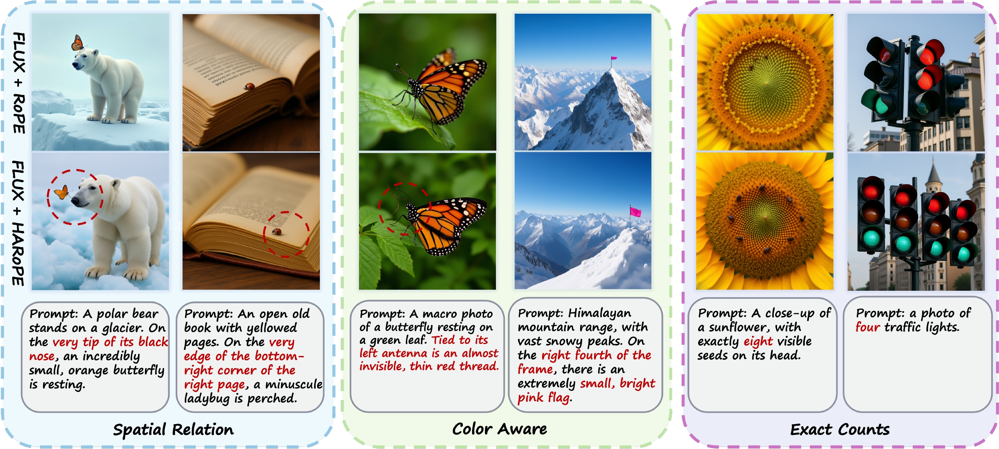
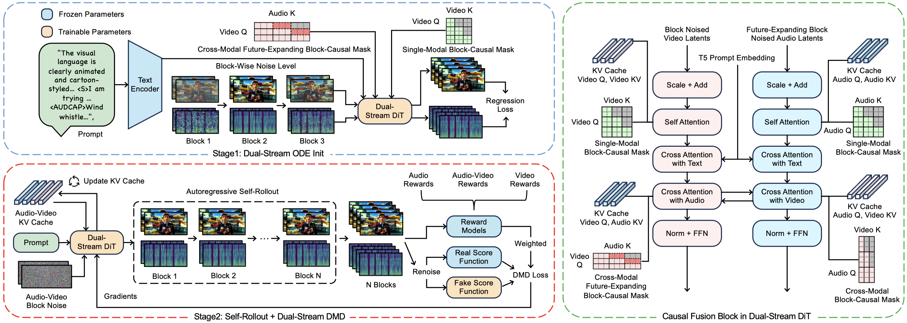
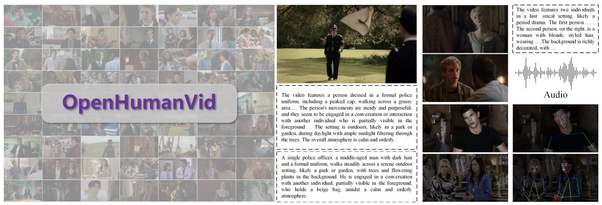
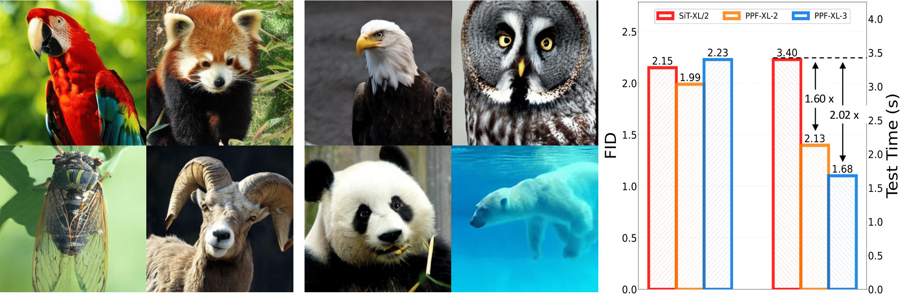
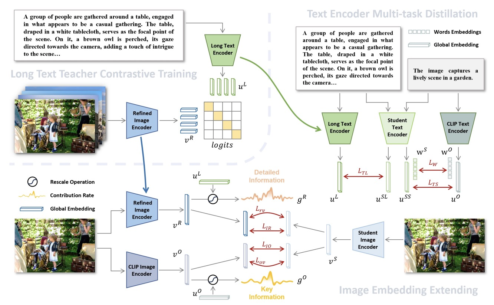

Visual Generative Models
Diffusion and flow-based models for high-quality image and video generation, with attention to controllability and visual fidelity.
Personal Homepage
I am a master's student at Fudan University, interested in computer vision and generative AI, advised by Prof. Siyu Zhu(朱思语).
My research focuses on visual generative models, with a specific emphasis on diffusion and flow-based image and video generation, human-centric video generation, and model post-training techniques, including distillation and reinforcement learning.
Research
Diffusion and flow-based models for high-quality image and video generation, with attention to controllability and visual fidelity.
Human-focused video synthesis, portrait animation, motion modeling, and data pipelines for realistic and temporally consistent generation.
Distillation, reinforcement learning, and other post-training techniques for improving generative model efficiency and alignment.
Selected Work

First AuthorImage Generation / CVPR 2026
HARoPE introduces a head-wise adaptive extension of RoPE for transformer-based image generation, improving fine-grained spatial relations, color fidelity, and object counting in class-conditional and text-to-image settings.

First AuthorAvatar Generation / 2026
Hallo-Live is a real-time text-driven audio-video avatar generation framework that combines asynchronous dual-stream diffusion with human-centric preference-guided distillation for low-latency, synchronized portrait video and speech synthesis.

Co-AuthorHuman Video / CVPR 2025
OpenHumanVid provides a large-scale, high-quality human-centric video dataset with detailed captions, skeleton sequences, and speech audio to improve human video generation and motion alignment.

Co-Author
Co-AuthorVision-Language / CVPR 2025
LongD-CLIP uses dual-teacher distillation to improve CLIP's long-text representation ability while retaining foundational short-text and zero-shot classification knowledge.
Background
Research Intern at the Shanghai Academy of AI for Science.
Master's student at Fudan University.
Bachelor's degree in Artificial Intelligence, Nanjing University of Aeronautics and Astronautics.
Contact
For research collaboration, project questions, or academic discussions, feel free to reach out by email or GitHub.